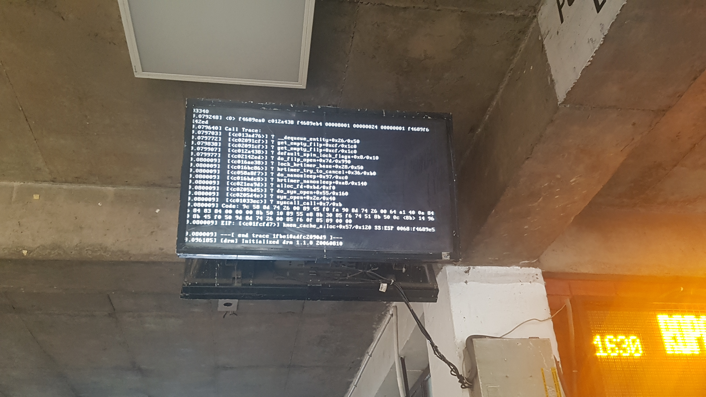

찬디가르역에서 노숙, 그리고 마날리 도착
2017년 05월 07일
여행 D+34, 인도 D+5, 마날리 D+1
길고 길었던 20시간동안의 기차
잠에 들었지만 한시간 간격으로 깼다. 인도 기차는 안내방송이 없기 때문에 자칫 하다간 역을 놓칠 수 있기 때문이다. 도착 예정시간은 3시였는데 당연히 연착되겠거니 하고 알람을 3시로 맞춰놨다. 근데 3시즘 기차가 멈춰있고 사람들이 나가는데 물어보니 내가 내려야할 찬디가르역 이라고 한다. 하마타면 역을 놓칠뻔 했다. 왠일로 제시간에 도착 한건지 의문이다.
역시나 짐을 들고 나가는데 릭샤꾼들이 들러붙는다. 처음에는 쌩까고 지나가다가 거의 밖에 나올 무렵 붙었던 릭샤꾼의 차를 얼떨결에 타게되었다. 나는 버스정류장이 있는 43섹터 근처 숙소로 데려가 달라고 했다. 3시였으니 방을 잡고 한숨 자도 괜찮을것 같았다. 놈들은 역시나 자기네들이 알고있는 숙소로 데려가려고 했다. 여기서 한참을 실랑이를 했다. 나는 43섹터 근처 숙소로 가고 싶다-> 43근처에 숙소가 없다며 자기들이 잘 아는 가까운 숙소로 데려다 주겠다. -> 그냥 43 까지 걸어갈수 있는곳이면 된다. 이렇게 말하고 출발했는데 역근처 숙소에 떨궈준다. (빡침) 그래서 43근처 숙소로 다시 가라고 했다.
찬디가르는 인도다른 지역과는 다르게 도로가 무척 잘 정비되어있었다. 계획도시라고 한다. wikitrevel을 보니 얼마전에 전시회를 관람했었던 르코르뷔지에가 도시 계획을 한 듯하다. 게다가 인도에서 처음보는 신호등이 있었고 릭샤꾼이 신호등을 지키면서 가는데 무척 의아스러웠다. 지금까지 경험상 인도인이 신호를 지킨다는것은 상상하기 어려운 일이 었다.
42섹터의 숙소앞에 내렸지만 빈방이 없었다. 몇번을 그렇게 다녔는데 없었다. 그래서 나는 그냥 버스정류장에서 노숙을 하기로 하고 43정류장 까지 데려다 달라고 했다. 40루피 더 달라고 한다. 어이가 없었지만 20시간 더위에 지쳐 실랑이할 힘이 없었다. 그래서 그냥 줬다.
정류장에 도착하니 정류장에도 숙소가 있었다. 역시 사기꾼 새끼들.. 나한테 또 뻥쳤다. 릭샤꾼중에 믿을만한 넘이 하나도 없다. 호객꾼들을 통해 방값을 물어봤는데 너무 비싸게 불러서 그냥 노숙하기로 했다. 어차피 시간이 벌써 4시가 넘었는데 얼마 자지도 못한다.
다행이 짐을 맞기는 보관소가 있어서 10루피에 짐을 맡기고 돌아다녔다. 과자랑 커피도 구매하고 세수도 하고 이도 닦고 2층 사람없는 장소 의자에 앉아서 책 인포메이션을 읽었다. 앉아서 쉬다가 또 돌아다녔는데 우연히 모니터 화면에 커널패닉이 나서 멈춰있는 리눅스 운영체제를 발견했다. 오랫만에 보는 커널패닉 로그.. 반가웠다. 회사에서는 개발할일 보다는 문제 로그 볼일이 많아서 자주보던 화면이다.
 오랫 만에 만나서 반가웠던 커널 패닉 로그. get_empty_filp() 에서 문제가 발생한것으로 보아 파일시스템에서 문제가 발생한듯?
버스 예매는 도데체 어디서 하나 봤더니 패닉난 모니터 옆에 advance reservation이 있었다. 바로가서 오늘 마날리로 가는 버스에대해서 물어봤다. 아저씨 발음이 이상해서 잘 못알아들었지만 아침 8시30분에 차가 한대 있고 그 뒤로는 밤 버스라고 한다. 원래 이곳에 밤버스를 타고 가기로 했는데 당장 8시반 버스가 있다고 하니까 흔들렸다. 숙소도 구하지 못했고 찬디가르에서 딱히 할것도 없고해서 바로 출발하기로 했다. 8시반 마날리로 출발이다. 이번 여행중 가장 좋은 버스티켓을 구매했다. 온라인 가격보다 저렴한(약1100) 850에 구매했다. 야호
버스에 타자마자 잘못된 자리라는것을 깨달았다. 버스 맨 뒤 일진석 오른쪽 창가 자리였는데 햇빛이 강하게 비쳤다. 가뜩이나 타는걸 싫어하는데 10시간 내내 햇빛을 쐬이며 가게 생겼다. 게다가 엔진룸 바로 윗자리기 때문에 진동도 심하다. 여행중 가장 비싸게 주고 탄 버스였는데 하필 이런 자리에 앉게 되다니!
부와 자본 바이러스
이 버스에는 온통 인도인이 앉아있는데 모두 여유가 있는 인도인인것 같았다. 내 앞에 앉은 인도 가족은 온몸에 금으로 된 장식이 많았다. 확실히 다른 것보다 안전하다는 느낌을 받았다. 결국 돈이 문제다. 돈이 없는 사람들이 사기를 치고 물건을 훔치고 호객행위로 사람을 지치게 한다. 사람이 문제가 아니라, 돈이 사람을 그렇게 만드는 것이다. 운좋게 부를 얻어 그런 걱정에서 벗어난 삶을 살게 된 이들과 그렇지 못한 대부분의 사람들의 삶의 질은 무척 달랐다.
현대 사회를 살면서 가장 조심해야할것은 자본 바이러스에 감염되지 않도록 주의 하는것이다. 이 질병에 걸리면 관계는 곧 목적을 달성하기 위한 수단이 된다. 공동체 생활을 하고 관계를 맺고 서로를 돕는것은 사회생활을 하도록 진화한 인간이 가진 고유한 특성이다. 자본 바이러스에 걸리면 인간이 가진 가장 가치있는 이 성질을 잃게 되는것 같다.
대부분의 질병이 그러하듯 이 자본 바이러스는 가난한 사람에게 더 취약하다. 지금까지 네팔과 인도만 경험했지만 물건을 훔치고 사기를 치고 어떻게든 내게 돈을 뜯어내기 위해 못살게구는 사람들은 모두 넉넉하지 못한 사람이었다. 생존을 위해 치열하게 살다가 어쩔수 없이 이 바이러스에 감염되는 것이다.
그렇다고 모든 가난한 사람이 이 바이러스에 걸리는것은 절대 아니다. 내가 경험했던 한 사람은 인도 바라나시의 보트 가이드 철수씨다. 그는 인도인이지만 한국이름이 있고 한국말을 대단히 잘한다. 보트안에서 잔돈이 떨어졌던 내게 그는 서슴없이 돈을 빌려줬으며, 보트 투어 이외에도 많은 여행 정보를 얻는데 도움을 줬다. 지금까지 여행중 경험한 현지인중 가장 인상이 좋고 친절하고 믿음이 가는 사람이었다.
그에게 고객은 돈벌이의 대상이 아니라 좋은 관계를 맺기 위한 대상이다. 그는 항상 신뢰를 더 중요하게 생각한다고 말했다. 그의 보트를 두번 탔기에 총3~4시간정도 그와 함께했다. 그에겐 끈임없이 누군가에게 전화가 오는대 대부분 한국인이다. 대부분의 한국인이 바라나시에 도착하면 그의 보트를 타지 않을까 생각된다. 신뢰를 기반으로한 그의 관계철학이 만들어낸 성취다. 자본 바이러스를 예방할 수 있는 좋은 사례라고 생각된다.
가난한사람이 자본 바이러스에 걸리면 고작 몇몇 사람에게 피해를 줄 뿐이지만, 부자가 이 바이러스에 걸릴 수록 사회 단위의 큰 문제를 일으킨다. 부자든 아니든 자본바이러스는 인류에게 가장 해를 끼치는 질병이다. 항상 스스로를 감시하고 예방하고 관계를 소중히 대하자고 다짐하게 된다. 관계는 수단이 아니라 사랑의 대상이다.
보트 위에서 고객에 대한 그의 철학을 이야기하던 철수씨, 나는 깊은 감동을 받아 그 자리에서 사진을 찍었다.
내가 어제 당한 사기 중 하나는 현지 유심카드다. 유심카드가 하루가 지났는데도 동작하지 않아서 같은 버스에 있던 어떤 청년에게 도움을 받았다. 그가 Airtel 고객센터에 전화해서 확인해줬는데 가입문서가 등록되지 않았다고 한다(잘 알아들은건지 모르겠지만) 내가 일종에 사기를 당한것이냐 라고 물었더니 그런것 같다고 한다. 본인이 휴대용 와이파이 공유기를 들고 다니는데 버스안에서 사용해도 좋다고 했다. 그래서 버스에서 내내 인터넷을 사용할 수 있었다. 사기를 당했지만 이렇게 현지인에게 도움을 받았다는것에 감사함을 느꼈다. 확실히 이 버스에 있는 사람들은 관계를 돈벌이 수단으로만 생각하지 않는것 처럼 느껴졌다.
20시간 기차에서도 제대로 쉬지 못한 나는 계속 졸다 깨다를 반복했다. 그러다가 점심즘 부터 엄청나게 구불구불한 길을 가게 되었는데 멀미가 시작되었다. 도저히 책이나 핸드폰을 볼 수가 없었다. 기사에게 물어보니 지금부터 도착할때까지 멀미가 계속된다고 한다. 안그래도 좌석마다 토봉지가 있었는데 괜히 있는게 아니었다. 심지어 wikitrevel에도 관련 내용이 쓰여있었다. > " ... Carrying/ consuming a tablet for motion-sickness is advised before mountain journeys ('Avomin' is one popular brand available over-the-counter). Also heavy/ spicy meals just before/after boarding the bus should be avoided. Volvos offer bags that people may use if they feel like vomiting. ..." (http://wikitravel.org/en/Manali)
한 8시간동안 아무 대화가 없었던 앞에앉았던 가족이 내게 말을 걸었다. 인도 상류층은 인종차별이 심하다는 이야기를 들어서 그와 대화하고 싶은생각이 없었는데 그것도 결국 편견인것으로 드러났다. 내게 상당한 호기심을 가졌고 우리는 서로 짧은 영어로 즐겁게 대화했다. 한국의 음식도 궁금해해서 김치와 불고기 삼겹살을 소개해줬다. 한국 돈도 궁금해해서 가지고 있던 5만원권을 보여줬다. 인도인에게 이렇게 돈을 보여주는것이 위험한 일이기는 하지만 (견물생심) 우려와는 다르게 잘 구경하고 바로 내게 돌려줬다. 그는 높은 계급의 군인이라고 하는데 내가 잘 이해한것이 맞다면 두번째 계급이라고 했다. 이런사람이 고작 몇푼을 훔치겠는가.
인터넷도 되겠다. 내일부터 마날리에서 뭘할지 검색을 했다. 멀미가 심해서 제대로 하지는 못했다. 이곳 마날리에서는 허송세월 보내지 말고 계획을 잘 짜서 많은것들을 경험해야겠다. 마날리에 할수 있는 액티비티가 무척 많다고 한다. 암벽등반, 패러글라이딩, 레프팅, 각종 트레킹 코스, 삼나무숲 등등.
10시간이 걸려서 드디어 마날리에 도착했다. 깜짝놀랐던것은 정류장에 내렸는데 수많은 인도 여행자들이 있었다는 사실이다. 그동안 관광을 당하는 현지인들만 봐서 그런지 베낭을 앞뒤로 메고 캐리어를 끄는 현지인을 보는것이 생소했다. 마날리는 여름철 인도 최고의 휴양지 라고 하니 그럴것도 같다.
내가 조사한 바에 따르면 마날리는 세 지역으로 구분된다. 뉴마날리/올드마날리/바쉬쉿. 버스는 뉴마날리에 도착했고 수 많은 인도 현지인들이 있어서 이곳에서 숙소를 잡고 싶지는 않았다. 그래서 나는 올드 마날리로 가기로 했다. 인터넷에서 걸어서 20분이라고 하길래 걸어갔는데 그냥 릭샤를 탈걸 그랬다. 걷는길에 우측에 거대한 삼나무 숲이 있었는데 멋졌다. 내일당장 가야겠다는 생각을 했다.
그동안 인도에 와서 목적지를 정해두고 역에 내리지 않으면 릭샤꾼에게 털린다는 교훈을 얻었다. 그래서 대충 버스에서 검색을 하고 내렸다. 구글맵을 보면서 올드마날리로 갔다. 검색했던 호스텔이 보이지 않아서 그냥 싼 숙소 아무데나 묶었는데 500루피다. 더 싼곳이 있을것 같긴한데 더 돌아다니기 힘들어서 그곳에 묶었다. 오늘은 그냥 씻고 바로 자야한다. 너무 피곤한 날이다. 약 30시간에 걸쳐서 바라나시에서 이곳으로 왔다. 땀을 엄청나게 흘려서 괴로웠다. 그래도 에어리즘 속옷이 땀배출에 훌륭한 기능을 했기에 그나마 견딜수 있었다. 유니클로 에어리즘 최고!!